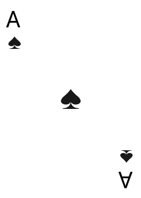
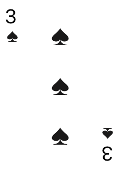
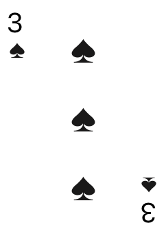
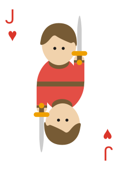
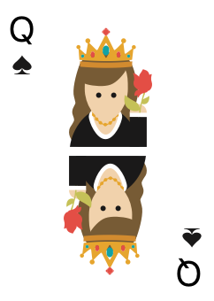
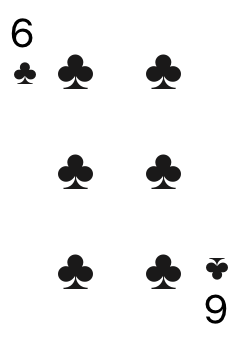
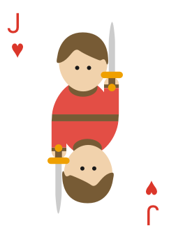
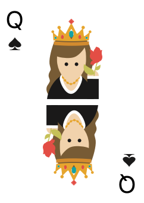
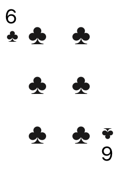

Antes de tudo, vou definir alguns termos que usarei para explicar o jogo:
Turno = São os momentos de entrega de cartas, no primeiro turno será entregue 1 carta para cada
jogador, no segundo será entregue 2 cartas para cada, e assim sucessivamente. Porém, é importante
destacar que o número de cartas só irá aumentar se o número de jogadores permitir. A conta
usada é: 40 dividido por número de jogadores
Rodada = Rodada se refere a jogada de cartas
na mesa, onde todos os jogadores devem jogar uma carta. Toda primeira rodada de um turno
começa com o jogador do lado direito de quem deu as cartas. Depois disso, as próximas rodadas
começam com quem venceu a rodada anterior
Palpite = Os palpites são quantas rodadas a
pessoa vai vencer naquele turno. Eles são ditos antes da primeira rodada de cada turno e
quem começa falando é a pessoa do lado direito de quem embaralhou. O número de palpites não pode
ser igual ao número de cartas que cada jogador recebeu no turno, e o responsável de
desequilibrar essa balança é o jogador que embaralhou, que também será o último a dar um
palpite
Nesse jogo vencer ou perder as rodadas não é o que importa, mas sim acertar seu palpite do ínicio
Cada jogador começa com 3 vidas e as perdem na medida que erram seus palpites. Cada jogador só pode perder 1 vida por turno
Vou começar falando a força dos naipes, do maior para o menor: Paus, Copas, Espadas e Ouros
Existem quatro coringas, do maior para o menor:

Depois dos coringas as cartas seguem a mesma lógica de naipes
Da maior para a menor:

 



 




